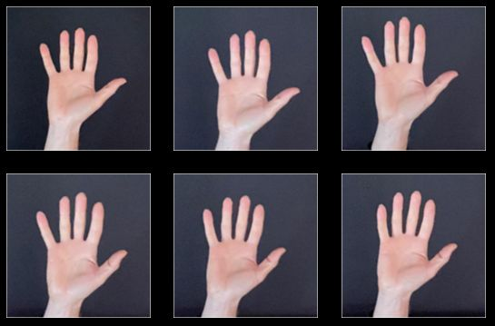
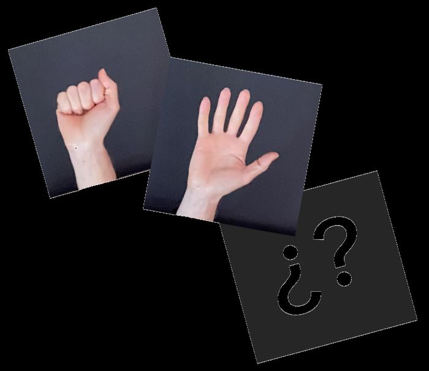

Enseña a la máquina: datos, sesgos e inteligencia artificial
S5 · Vuestros signos
De qué va esta sesión
Ya sabéis manejar la herramienta. Hoy empieza el reto de verdad: elegir qué signos de la
lengua de signos española va a reconocer vuestro sistema y construir un buen
conjunto de imágenes. Esta es la sesión que más determina si el proyecto sale bien: el modelo
no puede ser mejor que sus datos.
1. Por qué la lengua de signos
La lengua de signos española (LSE) es una lengua completa, con su gramática
propia; no es «español hecho con las manos». En España está reconocida legalmente por la
Ley 27/2007, desarrollada después por el Real Decreto 674/2023.
Según la encuesta de discapacidad del INE, en España hay más de un millón de personas con
discapacidad auditiva, de las cuales unas 27.000 se comunican en lengua de
signos. Andalucía es la comunidad con más personas sordas o con discapacidad auditiva del
país.
Hoy existen proyectos reales de IA aplicada a la lengua de signos: traductores que usan la
cámara del móvil, avatares que signan un texto escrito, aplicaciones de accesibilidad. Todos
funcionan con la misma idea que vais a usar vosotros —visión por ordenador y aprendizaje
supervisado— solo que con conjuntos de datos millones de veces más grandes.
Elegid entre 3 y 5 signos que formen un conjunto con sentido:
saludos (hola, adiós, gracias), respuestas
(sí, no, quizá), emociones, números…
Comprobad que se distinguen bien a simple vista. Dos signos que solo se
diferencian en un dedo van a ser una pesadilla para vuestro modelo.
Practicadlos hasta hacerlos igual todo el equipo.
Mínimo: 3 signos claramente distintos.
Si vais sobrados: 5 signos, o dos que se parezcan entre sí a propósito, para
ver si el modelo aguanta.
2. Qué hace bueno a un conjunto de imágenes

Ahí está la idea: la misma clase fotografiada de formas distintas.
Un conjunto de imágenes es bueno cuando cumple tres cosas:
Criterio
Qué significa
Objetivo
Cantidad
Suficientes ejemplos por clase para que el algoritmo encuentre el patrón.
Mínimo 20 por signo; 30-40 si podéis.
Variedad
Que cambien las condiciones: manos distintas, distancias, ángulos, luz, fondos.
Que participe todo el equipo, no una sola persona.
Equilibrio
Un número parecido de imágenes en cada clase.
Si hola tiene 40 y gracias tiene 8, el modelo tirará siempre hacia hola.
Consejos de fotografía que sí funcionan
Mano descubierta: sin mangas largas que tapen la muñeca, sin pulseras
ni relojes llamativos (el modelo podría aprender el reloj en vez del signo).
Fondo liso y uniforme: una pared, una cartulina. Si detrás hay una
estantería llena de cosas, parte del patrón que aprenda será la estantería.
Luz de frente, nunca a contraluz con una ventana detrás.
El signo bien centrado y ocupando buena parte de la imagen.
Y aun así, variad: si todas las fotos son idénticas, el modelo solo
reconocerá esa foto exacta.
Cuidado con las imágenes de personas
Fotografiad solo las manos: que no salgan caras ni nada que permita
identificar a nadie.
Cada persona decide si aparecen sus manos. Nadie fotografía a nadie sin permiso.
Las imágenes se quedan en el proyecto de la clase. No se publican ni se comparten
fuera.
Si haces las fotos con el móvil, van a la tarea de Classroom de la asignatura y
a ningún sitio más: nada de grupos de mensajería ni de redes. Y bórralas del móvil
cuando termine la unidad.
No es solo una norma del instituto: es exactamente el problema que estáis estudiando.
En el cuadro «Nombre del modelo», escribid reto_signos.
Cread una clase por signo, con el nombre del signo en minúsculas y sin
tildes ni espacios: hola, gracias, adios…
Añadid las imágenes con «Cámara» (si el equipo tiene webcam) o con
«Subir» (fotos hechas con el móvil y pasadas por Classroom, como se explicó
en la S4). Turnaos: que cada persona del equipo aporte fotos de cada
signo.
Revisad y borrad las que salgan movidas, cortadas o mal hechas. Una imagen mala
resta.
Reservad 3 imágenes por signo sin meterlas en ninguna clase: serán
vuestro examen honrado en la S6. Si trabajáis con el móvil, haced esas fotos también ahora y
no las subáis al editor.
Guardad: Archivo → «Guardar conjunto de datos en tu
ordenador». Obtendréis reto_signos.json.
Subid reto_signos.json a la tarea del reto en Classroom.
Sin esto, la sesión que viene empezáis de cero.

Anotad las decisiones (esto va en la reflexión de la S7)
Antes de terminar, escribid en el documento del equipo:
Qué signos habéis elegido y por qué.
Cuántas imágenes tiene cada clase.
Cuántas personas distintas han aportado imágenes.
Qué fondo y qué luz habéis usado.
Una predicción firmada: ¿con quién creéis que va a funcionar peor vuestro modelo?
Clasifica
Arrastra cada tarjeta hasta su categoría, según si mejora o empeora el conjunto de datos.